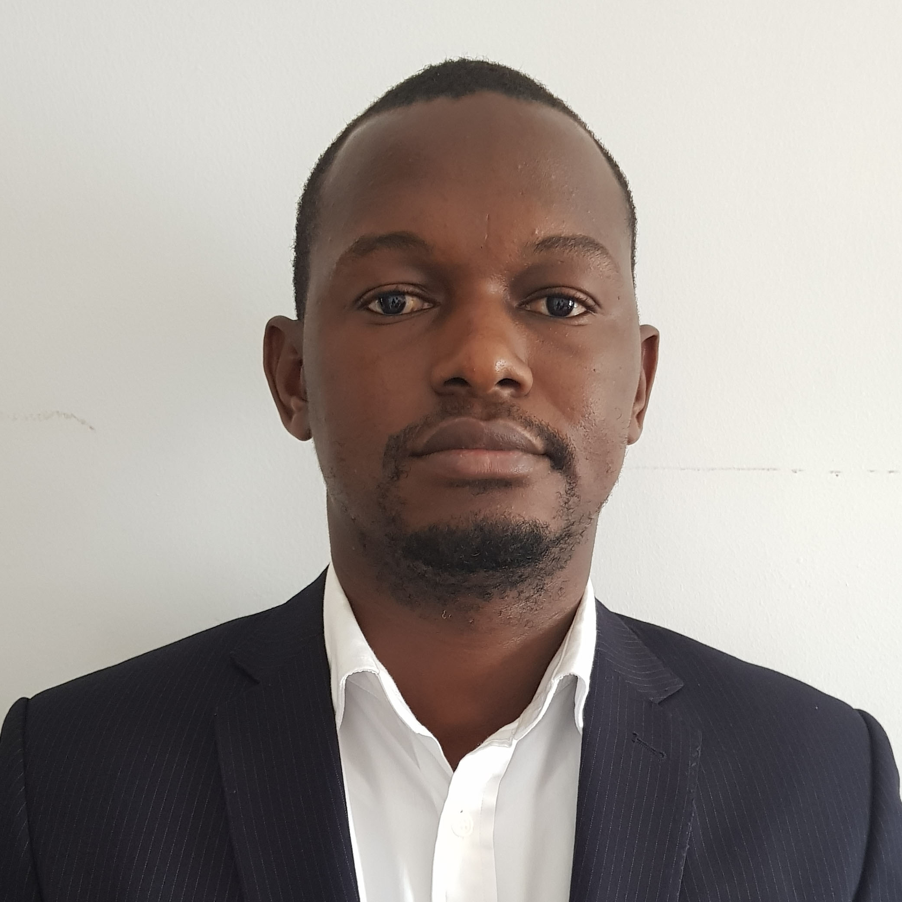

Abubakarr Barrie

Summary
Information Technology and Telecommunications Professional with over 15 years working experience. I have worked
for
various organisations and has served in different capacities in helping improve service delivery. I have
developed and
championed several projects including the provision of technical leadership, strategic and policy assessment and
implementation of various ICT solutions and intervention on work processes and other technology-related matters.
Conversant with Cloud Computing Services (Azure, AWS, GCP), Configuration Management tools (Ansible),
Programming/scripting Languages (Python, JavaScript), Cellular Networks (2G/3G/LTE/LTE-Advanced), LAN/WAN Design
&
Support, Fibre Optic Technology and Data Networking Implementation.
Education
-
M.Eng. Electrical (Telecommunication) Engineering
University Technology Malaysia, Johor.
-
B.Eng. Electrical (Communication) Engineering
Fourah Bay College, University of Sierra Leone
Professional Certification
- Certificate Course in Project Management Fundamentals – Institute of Public Administration and Management
(University
of Sierra Leone)
- Diploma in Server Infrastructure- Microsoft MCSE Server 2012, BlueCrest College, Sierra Leone
- Certified Ethical Hacking v8. EC-Council
- Certificate Course in Cisco Enterprise Networks (CCNA & CCNP Routing and Switching). UTL Technologies, India
- Cisco Certified Network Associate (CCNA 120-200)
- VMware Certified Associate (Cloud, Datacenter & Virtualization, and Workforce Mobility)
- Linux Red Hat Administration. UTL Technologies, India
- Information Technology Security. UTL Technologies, India
- Diploma in Antenna Line Systems & Installation of Aerial Systems. Katherine Antenna Electronics, France.
Work experience
-
Chief Innovation Officer and Co-Founder
Digitallé Global SL Ltd
- Lead the development and set up of the innovation department structure.
- Lead, supervise and manage the innovation process at Digitallé, nurturing and fostering an
Innovation culture while
setting up structures that allow for idea generation, testing and learning.
- Identify business opportunities and new delivery platforms, develop new capabilities and
architectures with partners,
new business models and new industry structures to serve those opportunities.
- Lead our IT strategy, managing an exciting range of IT solutions with support of a dedicated IT
team.
- Nurture collaboration, partnerships and information sharing, with management, partners, the board
and other
stakeholders.
- Establish a first-class business intelligence and analytics role within the department.
- Drive our vision of being the most efficient Value-Added Service Company in Sierra Leone by being
committed in
providing innovative solutions for our clients at all times.
-
ICT Manager
Office of National Security & Central Intelligence and Security Unit,
Office of the President, Freetown.
- To provide technical, strategic and policy advice on ICT matters and the implementation of various
ICT solutions and
interventions on work processes and other related matters.
- To help protect and defend National Security Systems
- Provide technical advice to ONS & CISU on ICT issues and projects;
- Advice on acquisition of IT resources based on assessment studies;
- Maintain inventory of all ICT resources within ONS & CISU
- Manage all matters relating to quality assurance, including testing of applications and related IT
equipment;
- Manage matters related to system security, including backups, password enforcement, antivirus
administration and
related physical security issues;
- Ensure that the ICT Policy is implemented in accordance with professional guidelines;
- Ensure cooperation with MOIC in the development and implementation of ICT strategies, guidelines and
standards within
the National ICT Policy;
-
Multimedia Product Executive
Airtel SL Ltd, Freetown
- Drive Airtel’s Multimedia Product group, including all Messaging, Content (WAP, Web and STK) and SMS
products across
all bearers;
- Stimulate the growth of subscriber usage and revenue of these mediums by applying product management
best practice to
the Multimedia product group, entrenching product ownership within the marketing function to deliver
on plan.
-
IT Banking Officer
Bank of Sierra Leone, Freetown
- Participated in the design, analysis and execution of the Payment System Implementation Project by
WAMI.
- Responsible for installing, configuring and maintaining of network equipment and devices.
- Administer and manage server, server clusters, system back-up and restore protocol.
- Perform troubleshooting analysis of workstations and associated systems.
- Oversee software and network security.
-
BSC Engineer
Africell Sierra Leone, Freetown
- Perform testing of BSC and TRAU elements during the commissioning and integration phases.
- Install BSC expansion module (plug-in units), commission and integrate BSC and TRAU or related
Network elements
according to valid documentation provided by Nokia Siemens Network (NSN).
- Analyze Technical Notes, Change Notes and all modifications and retrofits to be done on SW/HW of BCS
and TRAU or other
BSS related Network elements
- Conduct feasibility Study on implementation and roll-out plans.
-
BSS & Field Operation Engineer
Tigo Sierra Leone, Freetown.
- Administer daily operation and maintenance of Base Station Subsystems (BSS) network nodes.
- Effective monitoring/maintenance of radio links to minimize outages due to link failures.
- Responsible for the integration of new links to the NMS Systems
- Configure SDH and PDH Microwave links
- Perform both scheduled and unscheduled maintenance on BSC, BTS and Transmission Equipment
- Ensure all external alarms are configured and are functioning at all time.
-
Assistant BSS & Transmission Engineer
Africell Sierra Leone, Freetown
- Antenna installation (both GSM and Microwave)
- BTS installation and commissioning.
- Radio link installation, commissioning and monitoring (both Stratex and Siemens).
- Collection of RSL values of the transmission links and analysis of statistical data.
- Site maintenance and upgrade.
Seminars/Workshops
- Commonwealth Cybersecurity Capacity Building Workshop - Commonwealth Telecommunication Organisation,
Freetown, Sierra
Leone, 30 July 2019
- Seminar for Young and Middle-aged Diplomats of English-Speaking African Countries - Ministry of Commerce,
People’s
Republic of China, 8-28 June 2017.
- Regional Training Course on Information and Computer Security for Facilities that handle Nuclear and other
Radioactive
Material – International Atomic Energy Agency (IAEA) and South African Nuclear Energy Corporation (NECSA),
Cape Town,
South Africa, 7-11 November 2016
- Diplomats Combating Trafficking in Persons- U.S. Embassy Freetown, Sierra Leone, May 2015
- E-Commerce for Practitioners- United Nations Conference on Trade and Development (UNCTAD), Geneva, March
2015
- Working Effectively for Government- British High Commission and Civil Service College London, 6-9 January
2014
Other
Reference
Contact me